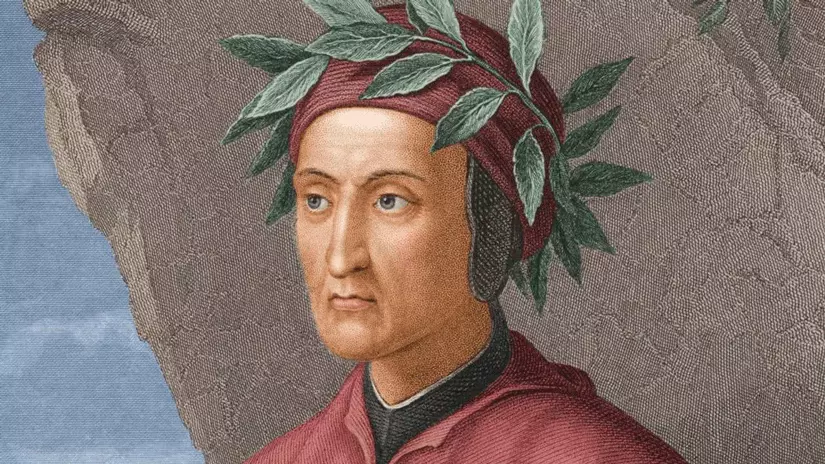
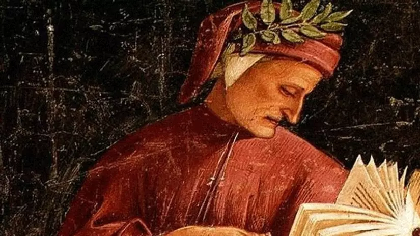

Ölümünün 701. Yılında Dante
Tarih: 6.07.2022- Yazar: Esra Altun
Dante Alighieri’nin, Cehennem`de başlayan, arada kalmışlığın mekânı Araf`ta devam eden ve nihayet günahsızların huzur bulduğu Cennet`te son bulan düşsel yolculuğunu anlattığı “İlahi Komedya”, tüm Batı kültürünün esin kaynağı olmayı sürdürüyor. İtalyan edebiyatının bu büyük şairiyle eski öğretiler ve İslamiyet arasındaki ilişkiyi anlamaya çalışmak ayrı bir güzellik. 1300’lü yıllarda Katolik kilisesinin büyük baskısına rağmen seküler, laik düşünceyi savunarak Latince karşısında İtalyancayı kullanan Dante Alighieri eserleri ile bugünün Avrupa Birliği düşüncesini oluşturmuş, İtalyan Birliği ve bayrağının temellerini atmış, özgür düşüncenin savunuculuğunu yapmıştır. Bağlı olduğu Tapınak Şövalyeleri ve Fedeli d’Amora kuruluşları üyelerinin katkıları ile ortaya koyduğu eserler ve özellikle İlahi Komedya daha sonra Gül Haç teşkilatı ve benzeri toplulukların ve özellikle ezoterik örgüt ritüellerin oluşmasının temellerini atmıştır. İnsanlık mabedinin kurulmasında sadece Avrupa’da Rönesans’ın başlamasını değil aynı zamanda düşünce sistemlerinin Orta Çağ karanlıklarında kurtulmasını sağlamıştır. Dante Alighieri bu nedenlerden dolayı tüm çağların en ünlü şairi olarak özellikle İtalya’da ve diğer ülkelerde çok önemli etkinliklerle anılmaktadır.
Dante hümanizma için mücadele etti. Kendisi için Papalık elçileri vasıtasıyla ölüm fermanı vermiş olan Floransa Şehrine bir daha hiç geri dönmedi ve Floransa Aşkı ile Ravenna'da son nefesini verdi. Mezarı Ravenna'dadır. Dante daima dogmalarla savaşmış ve bu uğurda acı çekmişti. Dante'yi okumaya, anlamaya ve Dante gibi düşünmeye çalışarak onun yolunda ilerleme arzusu devam etmektedir. İlâhi Komedi matbaacılığın icadından evvel 600 nüsha el ile yazılarak dağıtılmıştı. Sonra bütün dillere çevrilmiştir. 300’den fazla tercümesi vardır. Dante’ye ve cehenneme dair yapılmış tablolar sayısızdır. Dante’nin biyografisine ait pek mühim ve meşhur eserler yazılmıştır. İtalya Dante’yi en büyük İtalyan şairi olarak tanımış ve onun hakkında pek çok kutlama ve merasim yapmıştır. Dante’nin şöhreti yalnız İtalya’ya özgü kalmayıp bütün dünyaya yayılmış ve uluslararası bir önem kazanmıştır. “İlahi Komedi” klâsik eserlerin en yükseği ve en kıymetlisidir.
Dante'nin Hayatına Genel Bakış
Mayıs 1265’de Floransa'da doğan İtalyan yazar Dante Alighieri, 26 Mart 1266’da Durante adıyla vaftiz edildi. Haziran ayında ikizler burcu olarak doğdunu söyler. Gerçek adı olan Durante`yi kısaltarak Dante`yi kullanmıştır. Dante'nin ailesi köklü ve asil bir aile olmakla beraber sonradan fakir düşmüş ve aristokratik önemini kaybetmişti. Dante'nin babası II. Alighiero hakkında çok fazla bilgi yoktur, mesleği bilinmemekle beraber noter, hâkim veya faizci olduğuna dair çeşitli görüşler mevcuttur. II. Alighiero hakkındaki belki de tek "kesin" bilgi onun Guelf'ler partisine mensup olduğudur. O sıralarda yönetim Ghibellin'lerdeydi ve Ghibellin'ler Guelf'leri sürgün ederek şehirden uzaklaştırmışlardı. Her ne kadar Dante'nin babası II.Alighiero Guelf'lerden olsa da Dante doğduğunda, Floransa Ghibellin'lerin yönetiminde olmasına rağmen II.Alighiero ve ailesi Floransa'da ikamet etmekteydi. Dante babasını sevmezdi, bunun nedeni babasının kötü ünü veya silik kişiliği olabilir. Eserlerinin hiçbir yerinde babasından söz etmemiştir, aksine her fırsatta şövalyelik payesi bulunan dedesi Cacciaguida'dan bahseder, ailesinin soyunun Roma'ya dayandığı ile övünürdü. Dante annesini daha çok küçük yaşlarda kaybetmiştir. Babası da o on sekiz yaşlarındayken vefat etmiş, bunun üzerine Dante üvey annesi (monna Lapa) ve üvey kardeşleriyle yaşamak zorunda kalmıştır.
Yazarın hayatının bu dönemi ile ilgili çok fazla bilgi bulunmasa da, onun büyük acılar çekmemekle beraber bu dönem boyunca mutlu veya rahat olmadığı düşünülmektedir. Dante daha 12 yaşındayken ailesi tarafından Gemma di Manetto Donati ile sözlenmiştir. Ailesinin de ısrarlarıyla, 1295 yılında Floransa'lı tanınmış Donati ailesine mensup Gemma ile evlendi. Gemma'dan Pietro ve Jacapo isimlerinde iki oğlu ve Antonia isminde bir kızı olmuştur. Dante ile Gemma'nın mutlu bir evlilik geçirdikleri söylenemez. Birçok kaynağa göre Dante Gemma ile olan evliliğinde hiçbir zaman mutlu olamadı. Yine de Dante evliliğin kutsallığına inanan birisiydi ve Gemma ile olan ilişikisine dair pek bir kanıt yoktur, kendisi de bundan eserlerinde bahsetmemiştir. Dante sürgü edildikten sonra karısını bir daha görememiştir.